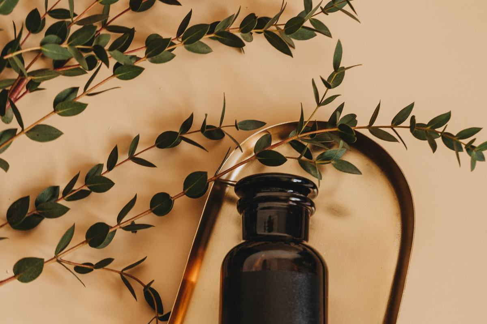

Beauty › Skincare
Drunk Elephant Protini Dupes With Peptides
Disclosure: This post contains affiliate links. As an Amazon Associate I earn from qualifying purchases. Learn more.

Quick answer
Drunk Elephant Protini Polypeptide Cream is about $68 for 1.69 oz. Naturium Multi-Peptide Moisturizer (~$20) is the closest daily alternative; Acure's Whipped Night Cream (~$15–22) is a budget peptide night option.
Comparison at a glance
Prices are approximate as of Nov 2026 and change often; check the retailer for the current price.
| Product | Price (approx., Nov 2026) | Size | Price/oz | Key features | Where to buy |
|---|---|---|---|---|---|
| Drunk Elephant Protini Polypeptide Cream Original | ~$68 | 1.69 fl oz | ~$40/oz | Signal peptides, pygmy waterlily, soybean folic acid ferment; fragrance- and essential-oil-free. | Shop on Amazon |
| Naturium Multi-Peptide Moisturizer Best overall dupe | ~$20 | 1.7 fl oz | ~$12/oz | Peptide blend, encapsulated vitamin C, panthenol, niacinamide, squalane. | Shop on Amazon |
| Acure Radically Rejuvenating Whipped Night Cream Budget night cream | ~$15–22 | 1.7 fl oz | ~$9–13/oz | Plant peptides, vitamin C, ferulic acid; vegan, paraben-free. | Shop on Amazon |
The original: Drunk Elephant Protini Polypeptide Cream
A prestige peptide moisturizer known for its light gel-cream texture and pump jar. Size: 1.69 fl oz.
Drunk Elephant Protini Polypeptide Cream
~$68 (approx., Nov 2026)
Buyers say: A light gel-cream that layers easily, but it is pricey.
Shop on AmazonThe dupes
1. Naturium Multi-Peptide Moisturizer
~$20 (approx., Nov 2026)
Buyers say: It absorbs fast and layers well under sunscreen, at about a third of the price.
Shop on AmazonWhat matches: Peptide blend, encapsulated vitamin C, panthenol, niacinamide, squalane.
Why buyers like it
- Reviewers say it absorbs fast and layers well under sunscreen and makeup.
- Buyers note it is unscented, similar to the original's fragrance-free approach.
- About a third of the price.
Watch out for
- A few reviewers report pilling when layered with certain products.
- Very oily or acne-prone skin may find it a bit rich.
2. Acure Radically Rejuvenating Whipped Night Cream
~$15–22 (approx., Nov 2026)
Buyers say: A light, whipped, non-greasy texture for a budget price.
Shop on AmazonWhat matches: Plant peptides, vitamin C, ferulic acid; vegan, paraben-free.
Why buyers like it
- Buyers like the light, whipped, non-greasy texture.
- Reviewers appreciate the low price for a peptide cream.
Watch out for
- Has a noticeable herbal scent that some reviewers dislike; not fragrance-free like Protini.
- Some buyers with very dry skin say it is not moisturizing enough.
Cautions
Peptides are generally well tolerated, but any new moisturizer can irritate; patch test for several days. Acure's scent comes from botanical ingredients, which can bother sensitive skin. These creams address the look of skin; they do not treat any condition.
This post is for general information only and is not medical advice.
How we chose
Picks are researched, not personally tested: we compared published specs and ingredient lists, Amazon and retailer star ratings and review counts, recurring themes in buyer reviews, and independent editorial reviews. "Buyers say" statements paraphrase common review themes; they are not quotes.
Prices and ratings checked November 1, 2026.